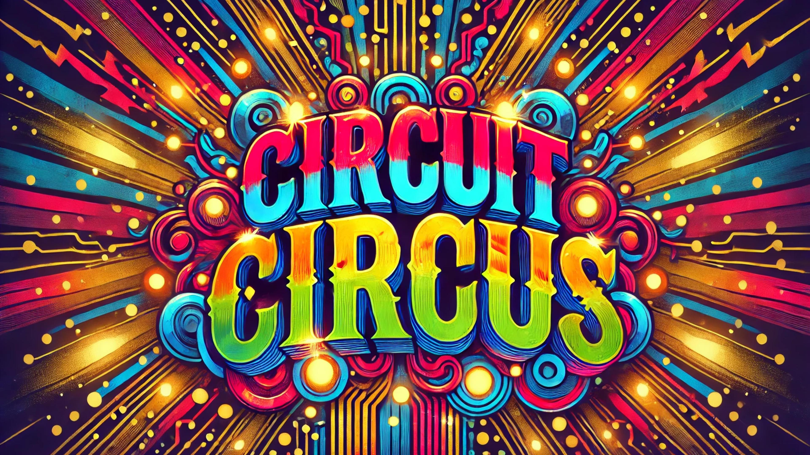

Images of the Final Product


Click to watch the video:

Yes, we successfully met all the requirements outlined in the SRS.
We performed extensive testing using the following methods:

Yes, we achieved all hardware-related specifications as per the HRS document.
Hardware tests were conducted as follows:

If we had more time, we would have focused on optimizing the system for better performance and added additional features, such as real-time data monitoring and an enhanced user interface.